%matplotlib inline
from preamble import *
plt.rcParams['image.cmap'] = "gray"Chapter 3 - Unsupervised Learning
Unsupervised Learning and Preprocessing
Types of unsupervised learning
Challenges in unsupervised learning
Preprocessing and Scaling
mglearn.plots.plot_scaling()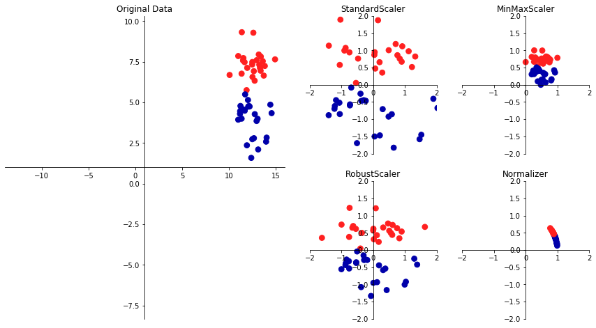
Different Kinds of Preprocessing
Applying Data Transformations
from sklearn.datasets import load_breast_cancer
from sklearn.model_selection import train_test_split
cancer = load_breast_cancer()
X_train, X_test, y_train, y_test = train_test_split(cancer.data, cancer.target,
random_state=1)
print(X_train.shape)
print(X_test.shape)(426, 30)
(143, 30)from sklearn.preprocessing import MinMaxScaler
scaler = MinMaxScaler()scaler.fit(X_train)MinMaxScaler()# transform data
X_train_scaled = scaler.transform(X_train)
# print dataset properties before and after scaling
print("transformed shape: {}".format(X_train_scaled.shape))
print("per-feature minimum before scaling:\n {}".format(X_train.min(axis=0)))
print("per-feature maximum before scaling:\n {}".format(X_train.max(axis=0)))
print("per-feature minimum after scaling:\n {}".format(
X_train_scaled.min(axis=0)))
print("per-feature maximum after scaling:\n {}".format(
X_train_scaled.max(axis=0)))transformed shape: (426, 30)
per-feature minimum before scaling:
[ 6.981 9.71 43.79 143.5 0.053 0.019 0. 0. 0.106
0.05 0.115 0.36 0.757 6.802 0.002 0.002 0. 0.
0.01 0.001 7.93 12.02 50.41 185.2 0.071 0.027 0.
0. 0.157 0.055]
per-feature maximum before scaling:
[ 28.11 39.28 188.5 2501. 0.163 0.287 0.427 0.201
0.304 0.096 2.873 4.885 21.98 542.2 0.031 0.135
0.396 0.053 0.061 0.03 36.04 49.54 251.2 4254.
0.223 0.938 1.17 0.291 0.577 0.149]
per-feature minimum after scaling:
[0. 0. 0. 0. 0. 0. 0. 0. 0. 0. 0. 0. 0. 0. 0. 0. 0. 0. 0. 0. 0. 0. 0. 0.
0. 0. 0. 0. 0. 0.]
per-feature maximum after scaling:
[1. 1. 1. 1. 1. 1. 1. 1. 1. 1. 1. 1. 1. 1. 1. 1. 1. 1. 1. 1. 1. 1. 1. 1.
1. 1. 1. 1. 1. 1.]# transform test data
X_test_scaled = scaler.transform(X_test)
# print test data properties after scaling
print("per-feature minimum after scaling:\n{}".format(X_test_scaled.min(axis=0)))
print("per-feature maximum after scaling:\n{}".format(X_test_scaled.max(axis=0)))per-feature minimum after scaling:
[ 0.034 0.023 0.031 0.011 0.141 0.044 0. 0. 0.154 -0.006
-0.001 0.006 0.004 0.001 0.039 0.011 0. 0. -0.032 0.007
0.027 0.058 0.02 0.009 0.109 0.026 0. 0. -0. -0.002]
per-feature maximum after scaling:
[0.958 0.815 0.956 0.894 0.811 1.22 0.88 0.933 0.932 1.037 0.427 0.498
0.441 0.284 0.487 0.739 0.767 0.629 1.337 0.391 0.896 0.793 0.849 0.745
0.915 1.132 1.07 0.924 1.205 1.631]Scaling training and test data the same way
from sklearn.datasets import make_blobs
# make synthetic data
X, _ = make_blobs(n_samples=50, centers=5, random_state=4, cluster_std=2)
# split it into training and test sets
X_train, X_test = train_test_split(X, random_state=5, test_size=.1)
# plot the training and test sets
fig, axes = plt.subplots(1, 3, figsize=(13, 4))
axes[0].scatter(X_train[:, 0], X_train[:, 1],
c=mglearn.cm2(0), label="Training set", s=60)
axes[0].scatter(X_test[:, 0], X_test[:, 1], marker='^',
c=mglearn.cm2(1), label="Test set", s=60)
axes[0].legend(loc='upper left')
axes[0].set_title("Original Data")
# scale the data using MinMaxScaler
scaler = MinMaxScaler()
scaler.fit(X_train)
X_train_scaled = scaler.transform(X_train)
X_test_scaled = scaler.transform(X_test)
# visualize the properly scaled data
axes[1].scatter(X_train_scaled[:, 0], X_train_scaled[:, 1],
c=mglearn.cm2(0), label="Training set", s=60)
axes[1].scatter(X_test_scaled[:, 0], X_test_scaled[:, 1], marker='^',
c=mglearn.cm2(1), label="Test set", s=60)
axes[1].set_title("Scaled Data")
# rescale the test set separately
# so test set min is 0 and test set max is 1
# DO NOT DO THIS! For illustration purposes only.
test_scaler = MinMaxScaler()
test_scaler.fit(X_test)
X_test_scaled_badly = test_scaler.transform(X_test)
# visualize wrongly scaled data
axes[2].scatter(X_train_scaled[:, 0], X_train_scaled[:, 1],
c=mglearn.cm2(0), label="training set", s=60)
axes[2].scatter(X_test_scaled_badly[:, 0], X_test_scaled_badly[:, 1],
marker='^', c=mglearn.cm2(1), label="test set", s=60)
axes[2].set_title("Improperly Scaled Data")
for ax in axes:
ax.set_xlabel("Feature 0")
ax.set_ylabel("Feature 1")
fig.tight_layout()
from sklearn.preprocessing import StandardScaler
scaler = StandardScaler()
# calling fit and transform in sequence (using method chaining)
X_scaled = scaler.fit(X_train).transform(X_train)
# same result, but more efficient computation
X_scaled_d = scaler.fit_transform(X_train)The effect of preprocessing on supervised learning
from sklearn.svm import SVC
X_train, X_test, y_train, y_test = train_test_split(cancer.data, cancer.target,
random_state=0)
svm = SVC(C=100)
svm.fit(X_train, y_train)
print("Test set accuracy: {:.2f}".format(svm.score(X_test, y_test)))Test set accuracy: 0.94# preprocessing using 0-1 scaling
scaler = MinMaxScaler()
scaler.fit(X_train)
X_train_scaled = scaler.transform(X_train)
X_test_scaled = scaler.transform(X_test)
# learning an SVM on the scaled training data
svm.fit(X_train_scaled, y_train)
# scoring on the scaled test set
print("Scaled test set accuracy: {:.2f}".format(
svm.score(X_test_scaled, y_test)))Scaled test set accuracy: 0.97# preprocessing using zero mean and unit variance scaling
from sklearn.preprocessing import StandardScaler
scaler = StandardScaler()
scaler.fit(X_train)
X_train_scaled = scaler.transform(X_train)
X_test_scaled = scaler.transform(X_test)
# learning an SVM on the scaled training data
svm.fit(X_train_scaled, y_train)
# scoring on the scaled test set
print("SVM test accuracy: {:.2f}".format(svm.score(X_test_scaled, y_test)))SVM test accuracy: 0.96Dimensionality Reduction, Feature Extraction and Manifold Learning
Principal Component Analysis (PCA)
mglearn.plots.plot_pca_illustration()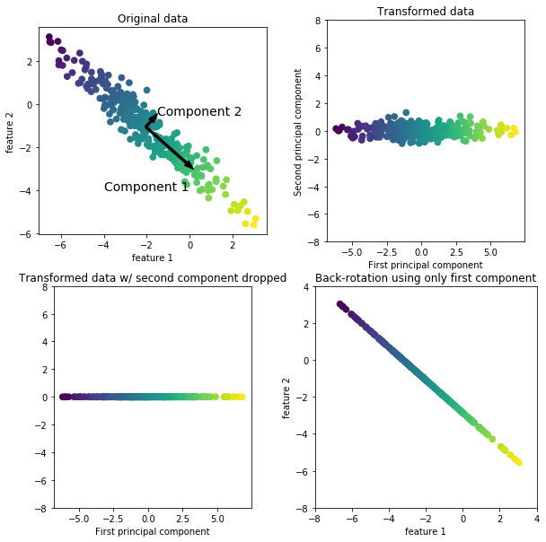
Applying PCA to the cancer dataset for visualization
fig, axes = plt.subplots(15, 2, figsize=(10, 20))
malignant = cancer.data[cancer.target == 0]
benign = cancer.data[cancer.target == 1]
ax = axes.ravel()
for i in range(30):
_, bins = np.histogram(cancer.data[:, i], bins=50)
ax[i].hist(malignant[:, i], bins=bins, color=mglearn.cm3(0), alpha=.5)
ax[i].hist(benign[:, i], bins=bins, color=mglearn.cm3(2), alpha=.5)
ax[i].set_title(cancer.feature_names[i])
ax[i].set_yticks(())
ax[0].set_xlabel("Feature magnitude")
ax[0].set_ylabel("Frequency")
ax[0].legend(["malignant", "benign"], loc="best")
fig.tight_layout()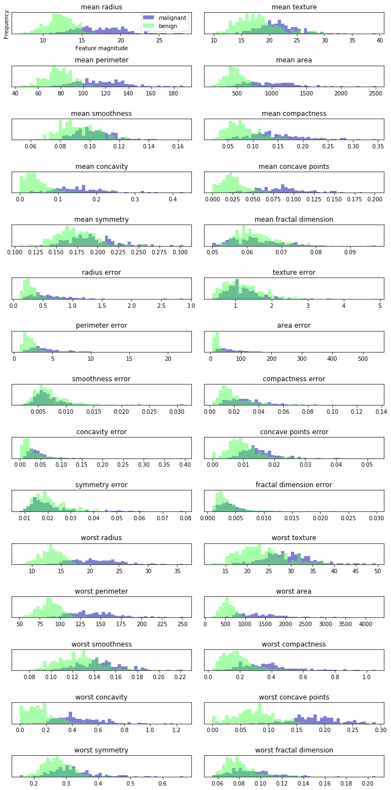
from sklearn.datasets import load_breast_cancer
cancer = load_breast_cancer()
scaler = StandardScaler()
scaler.fit(cancer.data)
X_scaled = scaler.transform(cancer.data)from sklearn.decomposition import PCA
# keep the first two principal components of the data
pca = PCA(n_components=2)
# fit PCA model to beast cancer data
pca.fit(X_scaled)
# transform data onto the first two principal components
X_pca = pca.transform(X_scaled)
print("Original shape: {}".format(str(X_scaled.shape)))
print("Reduced shape: {}".format(str(X_pca.shape)))Original shape: (569, 30)
Reduced shape: (569, 2)# plot first vs. second principal component, colored by class
plt.figure(figsize=(8, 8))
mglearn.discrete_scatter(X_pca[:, 0], X_pca[:, 1], cancer.target)
plt.legend(cancer.target_names, loc="best")
plt.gca().set_aspect("equal")
plt.xlabel("First principal component")
plt.ylabel("Second principal component")Text(0, 0.5, 'Second principal component')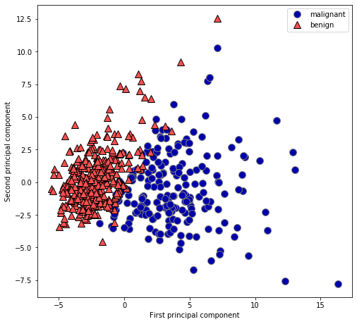
print("PCA component shape: {}".format(pca.components_.shape))PCA component shape: (2, 30)print("PCA components:\n{}".format(pca.components_))PCA components:
[[ 0.219 0.104 0.228 0.221 0.143 0.239 0.258 0.261 0.138 0.064
0.206 0.017 0.211 0.203 0.015 0.17 0.154 0.183 0.042 0.103
0.228 0.104 0.237 0.225 0.128 0.21 0.229 0.251 0.123 0.132]
[-0.234 -0.06 -0.215 -0.231 0.186 0.152 0.06 -0.035 0.19 0.367
-0.106 0.09 -0.089 -0.152 0.204 0.233 0.197 0.13 0.184 0.28
-0.22 -0.045 -0.2 -0.219 0.172 0.144 0.098 -0.008 0.142 0.275]]plt.matshow(pca.components_, cmap='viridis')
plt.yticks([0, 1], ["First component", "Second component"])
plt.colorbar()
plt.xticks(range(len(cancer.feature_names)),
cancer.feature_names, rotation=60, ha='left')
plt.xlabel("Feature")
plt.ylabel("Principal components")Text(0, 0.5, 'Principal components')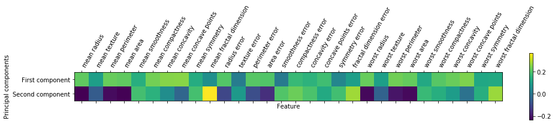
Eigenfaces for feature extraction
from sklearn.datasets import fetch_lfw_people
people = fetch_lfw_people(min_faces_per_person=20, resize=0.7)
image_shape = people.images[0].shape
fig, axes = plt.subplots(2, 5, figsize=(15, 8),
subplot_kw={'xticks': (), 'yticks': ()})
for target, image, ax in zip(people.target, people.images, axes.ravel()):
ax.imshow(image)
ax.set_title(people.target_names[target])print("people.images.shape: {}".format(people.images.shape))
print("Number of classes: {}".format(len(people.target_names)))people.images.shape: (3023, 87, 65)
Number of classes: 62# count how often each target appears
counts = np.bincount(people.target)
# print counts next to target names:
for i, (count, name) in enumerate(zip(counts, people.target_names)):
print("{0:25} {1:3}".format(name, count), end=' ')
if (i + 1) % 3 == 0:
print()Alejandro Toledo 39 Alvaro Uribe 35 Amelie Mauresmo 21
Andre Agassi 36 Angelina Jolie 20 Ariel Sharon 77
Arnold Schwarzenegger 42 Atal Bihari Vajpayee 24 Bill Clinton 29
Carlos Menem 21 Colin Powell 236 David Beckham 31
Donald Rumsfeld 121 George Robertson 22 George W Bush 530
Gerhard Schroeder 109 Gloria Macapagal Arroyo 44 Gray Davis 26
Guillermo Coria 30 Hamid Karzai 22 Hans Blix 39
Hugo Chavez 71 Igor Ivanov 20 Jack Straw 28
Jacques Chirac 52 Jean Chretien 55 Jennifer Aniston 21
Jennifer Capriati 42 Jennifer Lopez 21 Jeremy Greenstock 24
Jiang Zemin 20 John Ashcroft 53 John Negroponte 31
Jose Maria Aznar 23 Juan Carlos Ferrero 28 Junichiro Koizumi 60
Kofi Annan 32 Laura Bush 41 Lindsay Davenport 22
Lleyton Hewitt 41 Luiz Inacio Lula da Silva 48 Mahmoud Abbas 29
Megawati Sukarnoputri 33 Michael Bloomberg 20 Naomi Watts 22
Nestor Kirchner 37 Paul Bremer 20 Pete Sampras 22
Recep Tayyip Erdogan 30 Ricardo Lagos 27 Roh Moo-hyun 32
Rudolph Giuliani 26 Saddam Hussein 23 Serena Williams 52
Silvio Berlusconi 33 Tiger Woods 23 Tom Daschle 25
Tom Ridge 33 Tony Blair 144 Vicente Fox 32
Vladimir Putin 49 Winona Ryder 24 mask = np.zeros(people.target.shape, dtype=np.bool)
for target in np.unique(people.target):
mask[np.where(people.target == target)[0][:50]] = 1
X_people = people.data[mask]
y_people = people.target[mask]
# scale the grey-scale values to be between 0 and 1
# instead of 0 and 255 for better numeric stability:
X_people = X_people / 255.from sklearn.neighbors import KNeighborsClassifier
# split the data in training and test set
X_train, X_test, y_train, y_test = train_test_split(
X_people, y_people, stratify=y_people, random_state=0)
# build a KNeighborsClassifier with using one neighbor:
knn = KNeighborsClassifier(n_neighbors=1)
knn.fit(X_train, y_train)
print("Test set score of 1-nn: {:.2f}".format(knn.score(X_test, y_test)))Test set score of 1-nn: 0.23mglearn.plots.plot_pca_whitening()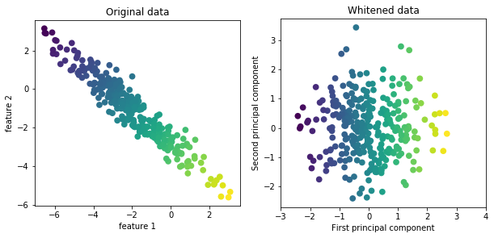
pca = PCA(n_components=100, whiten=True, random_state=0).fit(X_train)
X_train_pca = pca.transform(X_train)
X_test_pca = pca.transform(X_test)
print("X_train_pca.shape: {}".format(X_train_pca.shape))X_train_pca.shape: (1547, 100)knn = KNeighborsClassifier(n_neighbors=1)
knn.fit(X_train_pca, y_train)
print("Test set accuracy: {:.2f}".format(knn.score(X_test_pca, y_test)))Test set accuracy: 0.31print("pca.components_.shape: {}".format(pca.components_.shape))pca.components_.shape: (100, 5655)fig, axes = plt.subplots(3, 5, figsize=(15, 12),
subplot_kw={'xticks': (), 'yticks': ()})
for i, (component, ax) in enumerate(zip(pca.components_, axes.ravel())):
ax.imshow(component.reshape(image_shape),
cmap='viridis')
ax.set_title("{}. component".format((i + 1)))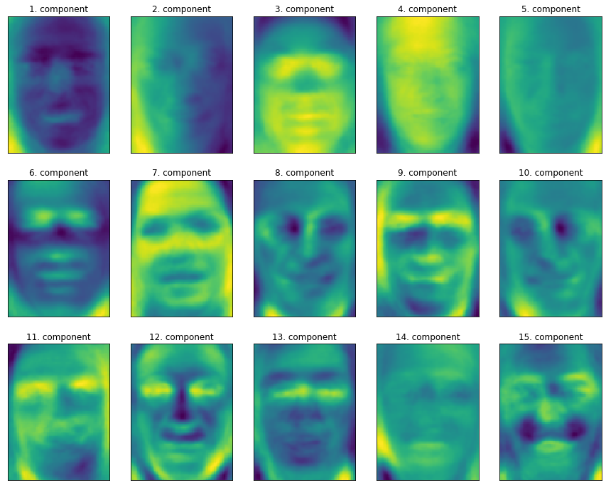
# FIXME hide this!
from matplotlib.offsetbox import OffsetImage, AnnotationBbox
image_shape = people.images[0].shape
plt.figure(figsize=(20, 3))
ax = plt.gca()
imagebox = OffsetImage(people.images[0], zoom=7, cmap="gray")
ab = AnnotationBbox(imagebox, (.05, 0.4), pad=0.0, xycoords='data')
ax.add_artist(ab)
for i in range(4):
imagebox = OffsetImage(pca.components_[i].reshape(image_shape), zoom=7,
cmap="viridis")
ab = AnnotationBbox(imagebox, (.3 + .2 * i, 0.4),
pad=0.0,
xycoords='data'
)
ax.add_artist(ab)
if i == 0:
plt.text(.18, .25, 'x_{} *'.format(i), fontdict={'fontsize': 50})
else:
plt.text(.15 + .2 * i, .25, '+ x_{} *'.format(i),
fontdict={'fontsize': 50})
plt.text(.95, .25, '+ ...', fontdict={'fontsize': 50})
plt.text(.13, .3, r'\approx', fontdict={'fontsize': 50})
plt.axis("off")
plt.savefig("images/03-face_decomposition.png")
plt.close()
mglearn.plots.plot_pca_faces(X_train, X_test, image_shape)________________________________________________________________________________
[Memory] Calling mglearn.plot_pca.pca_faces...
pca_faces(array([[0.535948, ..., 0.243137],
...,
[0.043137, ..., 0.596078]], dtype=float32),
array([[0.237908, ..., 0.269281],
...,
[0.4 , ..., 0.254902]], dtype=float32))
________________________________________________________pca_faces - 1.0s, 0.0min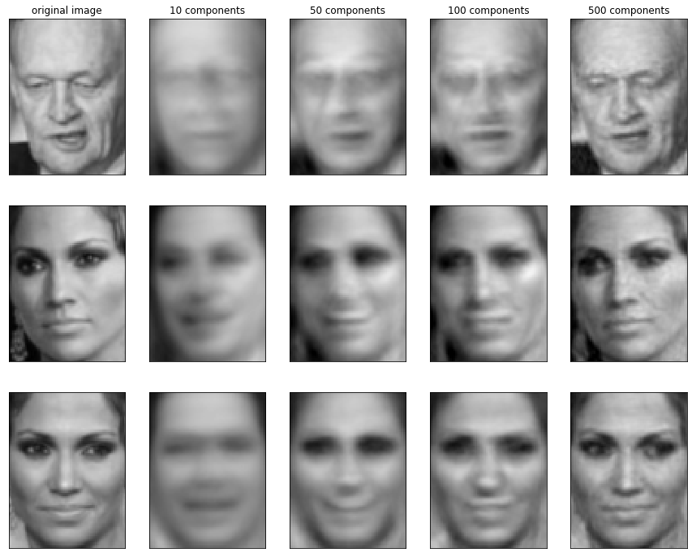
mglearn.discrete_scatter(X_train_pca[:, 0], X_train_pca[:, 1], y_train)
plt.xlabel("First principal component")
plt.ylabel("Second principal component")Text(0, 0.5, 'Second principal component')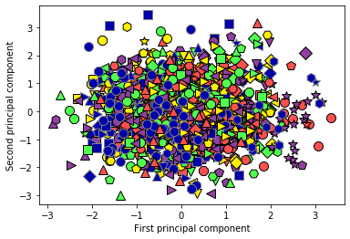
Non-Negative Matrix Factorization (NMF)
Applying NMF to synthetic data
mglearn.plots.plot_nmf_illustration()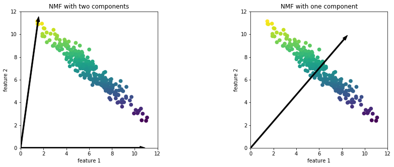
Applying NMF to face images
mglearn.plots.plot_nmf_faces(X_train, X_test, image_shape)________________________________________________________________________________
[Memory] Calling mglearn.plot_nmf.nmf_faces...
nmf_faces(array([[0.535948, ..., 0.243137],
...,
[0.043137, ..., 0.596078]], dtype=float32),
array([[0.237908, ..., 0.269281],
...,
[0.4 , ..., 0.254902]], dtype=float32))
______________________________________________________nmf_faces - 376.7s, 6.3min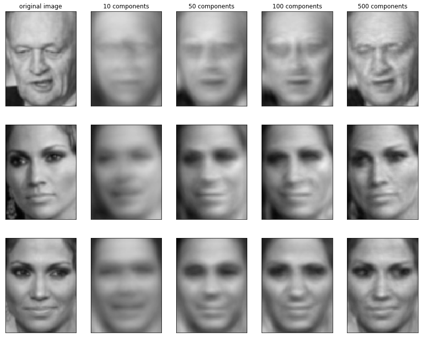
from sklearn.decomposition import NMF
nmf = NMF(n_components=15, random_state=0)
nmf.fit(X_train)
X_train_nmf = nmf.transform(X_train)
X_test_nmf = nmf.transform(X_test)
fig, axes = plt.subplots(3, 5, figsize=(15, 12),
subplot_kw={'xticks': (), 'yticks': ()})
for i, (component, ax) in enumerate(zip(nmf.components_, axes.ravel())):
ax.imshow(component.reshape(image_shape))
ax.set_title("{}. component".format(i))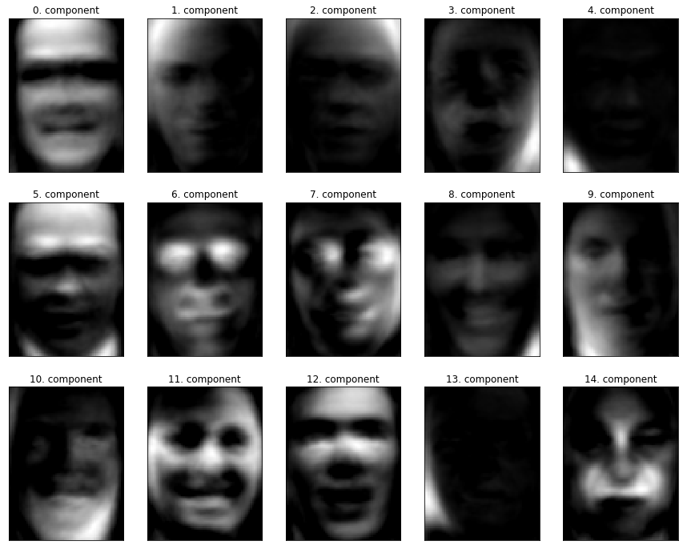
compn = 3
# sort by 3rd component, plot first 10 images
inds = np.argsort(X_train_nmf[:, compn])[::-1]
fig, axes = plt.subplots(2, 5, figsize=(15, 8),
subplot_kw={'xticks': (), 'yticks': ()})
fig.suptitle("Large component 3")
for i, (ind, ax) in enumerate(zip(inds, axes.ravel())):
ax.imshow(X_train[ind].reshape(image_shape))
compn = 7
# sort by 7th component, plot first 10 images
inds = np.argsort(X_train_nmf[:, compn])[::-1]
fig.suptitle("Large component 7")
fig, axes = plt.subplots(2, 5, figsize=(15, 8),
subplot_kw={'xticks': (), 'yticks': ()})
for i, (ind, ax) in enumerate(zip(inds, axes.ravel())):
ax.imshow(X_train[ind].reshape(image_shape))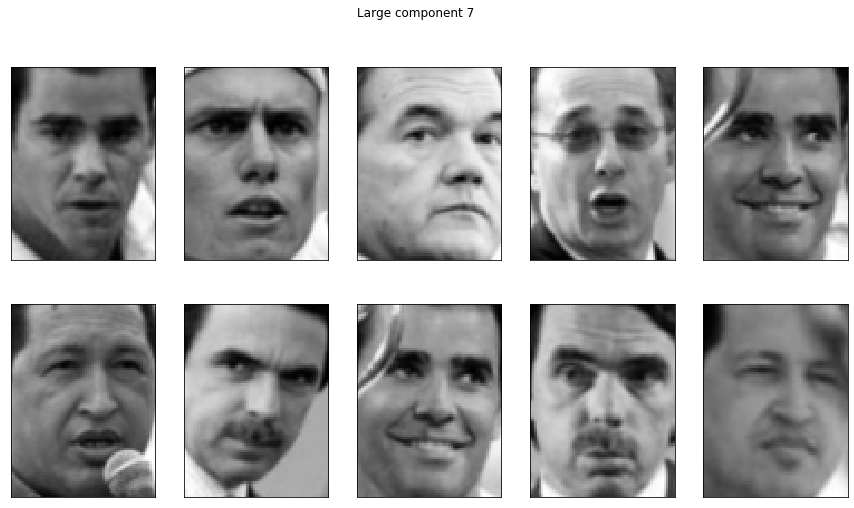
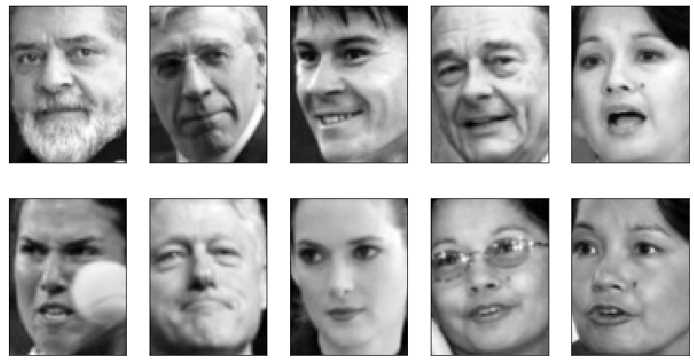
S = mglearn.datasets.make_signals()
plt.figure(figsize=(6, 1))
plt.plot(S, '-')
plt.xlabel("Time")
plt.ylabel("Signal")Text(0, 0.5, 'Signal')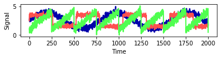
# Mix data into a 100 dimensional state
A = np.random.RandomState(0).uniform(size=(100, 3))
X = np.dot(S, A.T)
print("Shape of measurements: {}".format(X.shape))Shape of measurements: (2000, 100)nmf = NMF(n_components=3, random_state=42)
S_ = nmf.fit_transform(X)
print("Recovered signal shape: {}".format(S_.shape))Recovered signal shape: (2000, 3)pca = PCA(n_components=3)
H = pca.fit_transform(X)models = [X, S, S_, H]
names = ['Observations (first three measurements)',
'True sources',
'NMF recovered signals',
'PCA recovered signals']
fig, axes = plt.subplots(4, figsize=(8, 4), gridspec_kw={'hspace': .5},
subplot_kw={'xticks': (), 'yticks': ()})
for model, name, ax in zip(models, names, axes):
ax.set_title(name)
ax.plot(model[:, :3], '-')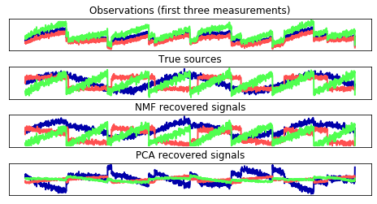
Manifold Learning with t-SNE
from sklearn.datasets import load_digits
digits = load_digits()
fig, axes = plt.subplots(2, 5, figsize=(10, 5),
subplot_kw={'xticks':(), 'yticks': ()})
for ax, img in zip(axes.ravel(), digits.images):
ax.imshow(img)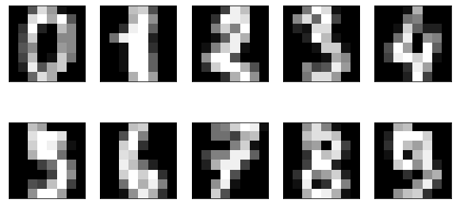
# build a PCA model
pca = PCA(n_components=2)
pca.fit(digits.data)
# transform the digits data onto the first two principal components
digits_pca = pca.transform(digits.data)
colors = ["#476A2A", "#7851B8", "#BD3430", "#4A2D4E", "#875525",
"#A83683", "#4E655E", "#853541", "#3A3120", "#535D8E"]
plt.figure(figsize=(10, 10))
plt.xlim(digits_pca[:, 0].min(), digits_pca[:, 0].max())
plt.ylim(digits_pca[:, 1].min(), digits_pca[:, 1].max())
for i in range(len(digits.data)):
# actually plot the digits as text instead of using scatter
plt.text(digits_pca[i, 0], digits_pca[i, 1], str(digits.target[i]),
color = colors[digits.target[i]],
fontdict={'weight': 'bold', 'size': 9})
plt.xlabel("First principal component")
plt.ylabel("Second principal component")Text(0, 0.5, 'Second principal component')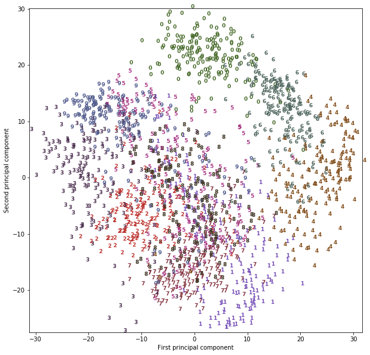
from sklearn.manifold import TSNE
tsne = TSNE(random_state=42)
# use fit_transform instead of fit, as TSNE has no transform method
digits_tsne = tsne.fit_transform(digits.data)plt.figure(figsize=(10, 10))
plt.xlim(digits_tsne[:, 0].min(), digits_tsne[:, 0].max() + 1)
plt.ylim(digits_tsne[:, 1].min(), digits_tsne[:, 1].max() + 1)
for i in range(len(digits.data)):
# actually plot the digits as text instead of using scatter
plt.text(digits_tsne[i, 0], digits_tsne[i, 1], str(digits.target[i]),
color = colors[digits.target[i]],
fontdict={'weight': 'bold', 'size': 9})
plt.xlabel("t-SNE feature 0")
plt.ylabel("t-SNE feature 1")Text(0, 0.5, 't-SNE feature 1')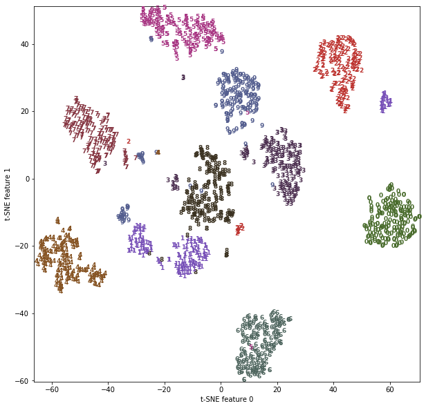
Clustering
k-Means clustering
mglearn.plots.plot_kmeans_algorithm()
mglearn.plots.plot_kmeans_boundaries()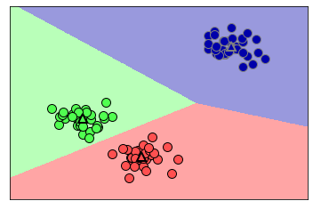
from sklearn.datasets import make_blobs
from sklearn.cluster import KMeans
# generate synthetic two-dimensional data
X, y = make_blobs(random_state=1)
# build the clustering model
kmeans = KMeans(n_clusters=3)
kmeans.fit(X)KMeans(n_clusters=3)print("Cluster memberships:\n{}".format(kmeans.labels_))Cluster memberships:
[0 1 1 1 2 2 2 1 0 0 1 1 2 0 2 2 2 0 1 1 2 1 2 0 1 2 2 0 0 2 0 0 2 0 1 2 1
1 1 2 2 1 0 1 1 2 0 0 0 0 1 2 2 2 0 2 1 1 0 0 1 2 2 1 1 2 0 2 0 1 1 1 2 0
0 1 2 2 0 1 0 1 1 2 0 0 0 0 1 0 2 0 0 1 1 2 2 0 2 0]print(kmeans.predict(X))[0 1 1 1 2 2 2 1 0 0 1 1 2 0 2 2 2 0 1 1 2 1 2 0 1 2 2 0 0 2 0 0 2 0 1 2 1
1 1 2 2 1 0 1 1 2 0 0 0 0 1 2 2 2 0 2 1 1 0 0 1 2 2 1 1 2 0 2 0 1 1 1 2 0
0 1 2 2 0 1 0 1 1 2 0 0 0 0 1 0 2 0 0 1 1 2 2 0 2 0]mglearn.discrete_scatter(X[:, 0], X[:, 1], kmeans.labels_, markers='o')
mglearn.discrete_scatter(
kmeans.cluster_centers_[:, 0], kmeans.cluster_centers_[:, 1], [0, 1, 2],
markers='^', markeredgewidth=2)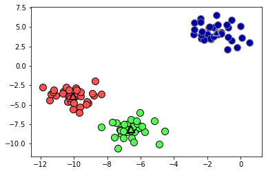
fig, axes = plt.subplots(1, 2, figsize=(10, 5))
# using two cluster centers:
kmeans = KMeans(n_clusters=2)
kmeans.fit(X)
assignments = kmeans.labels_
mglearn.discrete_scatter(X[:, 0], X[:, 1], assignments, ax=axes[0])
# using five cluster centers:
kmeans = KMeans(n_clusters=5)
kmeans.fit(X)
assignments = kmeans.labels_
mglearn.discrete_scatter(X[:, 0], X[:, 1], assignments, ax=axes[1])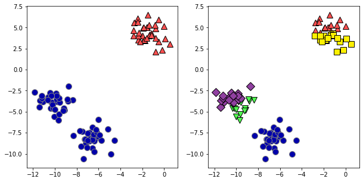
Failure cases of k-Means
X_varied, y_varied = make_blobs(n_samples=200,
cluster_std=[1.0, 2.5, 0.5],
random_state=170)
y_pred = KMeans(n_clusters=3, random_state=0).fit_predict(X_varied)
mglearn.discrete_scatter(X_varied[:, 0], X_varied[:, 1], y_pred)
plt.legend(["cluster 0", "cluster 1", "cluster 2"], loc='best')
plt.xlabel("Feature 0")
plt.ylabel("Feature 1")Text(0, 0.5, 'Feature 1')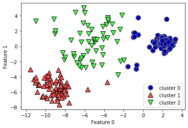
# generate some random cluster data
X, y = make_blobs(random_state=170, n_samples=600)
rng = np.random.RandomState(74)
# transform the data to be stretched
transformation = rng.normal(size=(2, 2))
X = np.dot(X, transformation)
# cluster the data into three clusters
kmeans = KMeans(n_clusters=3)
kmeans.fit(X)
y_pred = kmeans.predict(X)
# plot the cluster assignments and cluster centers
mglearn.discrete_scatter(X[:, 0], X[:, 1], kmeans.labels_, markers='o')
mglearn.discrete_scatter(
kmeans.cluster_centers_[:, 0], kmeans.cluster_centers_[:, 1], [0, 1, 2],
markers='^', markeredgewidth=2)
plt.xlabel("Feature 0")
plt.ylabel("Feature 1")Text(0, 0.5, 'Feature 1')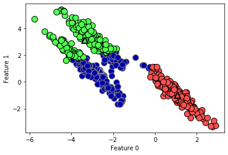
# generate synthetic two_moons data (with less noise this time)
from sklearn.datasets import make_moons
X, y = make_moons(n_samples=200, noise=0.05, random_state=0)
# cluster the data into two clusters
kmeans = KMeans(n_clusters=2)
kmeans.fit(X)
y_pred = kmeans.predict(X)
# plot the cluster assignments and cluster centers
plt.scatter(X[:, 0], X[:, 1], c=y_pred, cmap=mglearn.cm2, s=60, edgecolor='k')
plt.scatter(kmeans.cluster_centers_[:, 0], kmeans.cluster_centers_[:, 1],
marker='^', c=[mglearn.cm2(0), mglearn.cm2(1)], s=100, linewidth=2,
edgecolor='k')
plt.xlabel("Feature 0")
plt.ylabel("Feature 1")Text(0, 0.5, 'Feature 1')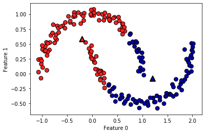
Vector Quantization - Or Seeing k-Means as Decomposition
X_train, X_test, y_train, y_test = train_test_split(
X_people, y_people, stratify=y_people, random_state=0)
nmf = NMF(n_components=100, random_state=0)
nmf.fit(X_train)
pca = PCA(n_components=100, random_state=0)
pca.fit(X_train)
kmeans = KMeans(n_clusters=100, random_state=0)
kmeans.fit(X_train)
X_reconstructed_pca = pca.inverse_transform(pca.transform(X_test))
X_reconstructed_kmeans = kmeans.cluster_centers_[kmeans.predict(X_test)]
X_reconstructed_nmf = np.dot(nmf.transform(X_test), nmf.components_)fig, axes = plt.subplots(3, 5, figsize=(8, 8),
subplot_kw={'xticks': (), 'yticks': ()})
fig.suptitle("Extracted Components")
for ax, comp_kmeans, comp_pca, comp_nmf in zip(
axes.T, kmeans.cluster_centers_, pca.components_, nmf.components_):
ax[0].imshow(comp_kmeans.reshape(image_shape))
ax[1].imshow(comp_pca.reshape(image_shape), cmap='viridis')
ax[2].imshow(comp_nmf.reshape(image_shape))
axes[0, 0].set_ylabel("kmeans")
axes[1, 0].set_ylabel("pca")
axes[2, 0].set_ylabel("nmf")
fig, axes = plt.subplots(4, 5, subplot_kw={'xticks': (), 'yticks': ()},
figsize=(8, 8))
fig.suptitle("Reconstructions")
for ax, orig, rec_kmeans, rec_pca, rec_nmf in zip(
axes.T, X_test, X_reconstructed_kmeans, X_reconstructed_pca,
X_reconstructed_nmf):
ax[0].imshow(orig.reshape(image_shape))
ax[1].imshow(rec_kmeans.reshape(image_shape))
ax[2].imshow(rec_pca.reshape(image_shape))
ax[3].imshow(rec_nmf.reshape(image_shape))
axes[0, 0].set_ylabel("original")
axes[1, 0].set_ylabel("kmeans")
axes[2, 0].set_ylabel("pca")
axes[3, 0].set_ylabel("nmf")Text(0, 0.5, 'nmf')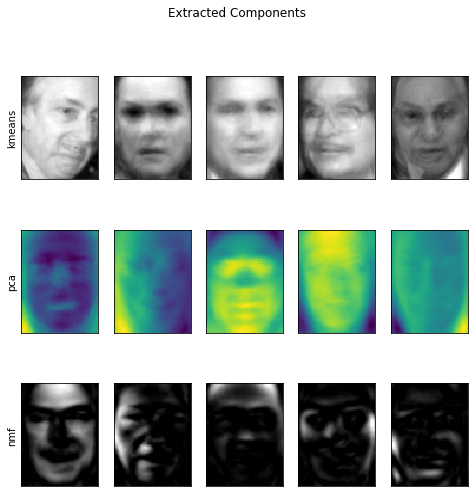
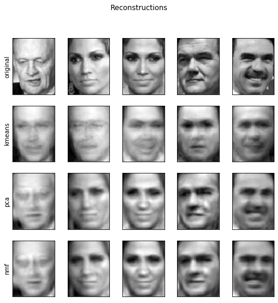
X, y = make_moons(n_samples=200, noise=0.05, random_state=0)
kmeans = KMeans(n_clusters=10, random_state=0)
kmeans.fit(X)
y_pred = kmeans.predict(X)
plt.scatter(X[:, 0], X[:, 1], c=y_pred, s=60, cmap='Paired')
plt.scatter(kmeans.cluster_centers_[:, 0], kmeans.cluster_centers_[:, 1], s=60,
marker='^', c=range(kmeans.n_clusters), linewidth=2, cmap='Paired')
plt.xlabel("Feature 0")
plt.ylabel("Feature 1")
print("Cluster memberships:\n{}".format(y_pred))Cluster memberships:
[4 7 6 9 7 7 4 1 4 1 8 3 7 1 0 4 2 3 2 0 5 1 2 1 8 6 7 5 6 2 4 8 1 6 4 5 3
4 0 6 3 8 2 6 7 8 4 0 6 1 0 3 5 9 1 4 2 1 2 8 3 9 7 4 1 9 8 7 8 9 3 9 3 6
1 9 6 4 2 3 5 8 3 5 6 8 4 8 3 5 2 4 5 0 5 7 7 3 9 6 1 5 8 4 9 6 9 8 7 2 0
8 8 9 4 1 2 5 3 4 4 0 6 8 6 0 4 6 1 5 4 0 9 3 1 7 1 9 5 4 6 6 2 8 8 4 6 1
2 6 3 7 4 2 3 8 1 3 2 2 6 1 2 7 3 7 2 3 7 1 2 9 0 0 6 1 5 0 0 2 7 0 5 7 5
2 8 3 9 0 9 2 4 4 6 0 5 6 2 7]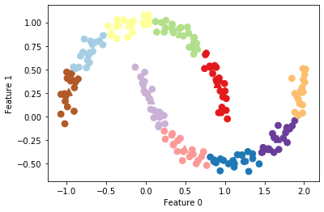
distance_features = kmeans.transform(X)
print("Distance feature shape: {}".format(distance_features.shape))
print("Distance features:\n{}".format(distance_features))Distance feature shape: (200, 10)
Distance features:
[[1.547 1.034 0.525 ... 1.141 1.125 1.808]
[2.569 0.508 1.729 ... 0.15 2.276 2.668]
[0.809 1.359 0.75 ... 1.765 0.719 0.951]
...
[1.13 1.049 0.917 ... 1.509 1.049 1.178]
[0.909 1.779 0.332 ... 1.983 0.343 1.328]
[2.511 0.559 1.621 ... 0.048 2.189 2.638]]Agglomerative Clustering
mglearn.plots.plot_agglomerative_algorithm()
from sklearn.cluster import AgglomerativeClustering
X, y = make_blobs(random_state=1)
agg = AgglomerativeClustering(n_clusters=3)
assignment = agg.fit_predict(X)
mglearn.discrete_scatter(X[:, 0], X[:, 1], assignment)
plt.legend(["Cluster 0", "Cluster 1", "Cluster 2"], loc="best")
plt.xlabel("Feature 0")
plt.ylabel("Feature 1")Text(0, 0.5, 'Feature 1')
Hierarchical Clustering and Dendrograms
mglearn.plots.plot_agglomerative()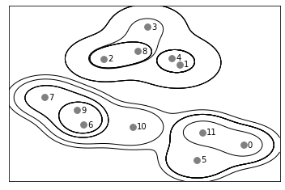
# Import the dendrogram function and the ward clustering function from SciPy
from scipy.cluster.hierarchy import dendrogram, ward
X, y = make_blobs(random_state=0, n_samples=12)
# Apply the ward clustering to the data array X
# The SciPy ward function returns an array that specifies the distances
# bridged when performing agglomerative clustering
linkage_array = ward(X)
# Now we plot the dendrogram for the linkage_array containing the distances
# between clusters
dendrogram(linkage_array)
# mark the cuts in the tree that signify two or three clusters
ax = plt.gca()
bounds = ax.get_xbound()
ax.plot(bounds, [7.25, 7.25], '--', c='k')
ax.plot(bounds, [4, 4], '--', c='k')
ax.text(bounds[1], 7.25, ' two clusters', va='center', fontdict={'size': 15})
ax.text(bounds[1], 4, ' three clusters', va='center', fontdict={'size': 15})
plt.xlabel("Sample index")
plt.ylabel("Cluster distance")Text(0, 0.5, 'Cluster distance')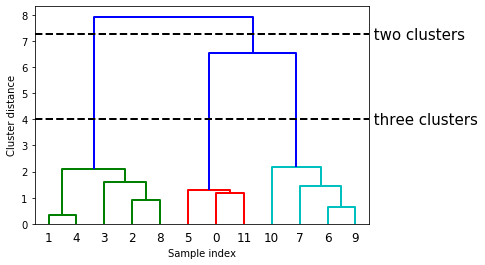
DBSCAN
from sklearn.cluster import DBSCAN
X, y = make_blobs(random_state=0, n_samples=12)
dbscan = DBSCAN()
clusters = dbscan.fit_predict(X)
print("Cluster memberships:\n{}".format(clusters))Cluster memberships:
[-1 -1 -1 -1 -1 -1 -1 -1 -1 -1 -1 -1]mglearn.plots.plot_dbscan()min_samples: 2 eps: 1.000000 cluster: [-1 0 0 -1 0 -1 1 1 0 1 -1 -1]
min_samples: 2 eps: 1.500000 cluster: [0 1 1 1 1 0 2 2 1 2 2 0]
min_samples: 2 eps: 2.000000 cluster: [0 1 1 1 1 0 0 0 1 0 0 0]
min_samples: 2 eps: 3.000000 cluster: [0 0 0 0 0 0 0 0 0 0 0 0]
min_samples: 3 eps: 1.000000 cluster: [-1 0 0 -1 0 -1 1 1 0 1 -1 -1]
min_samples: 3 eps: 1.500000 cluster: [0 1 1 1 1 0 2 2 1 2 2 0]
min_samples: 3 eps: 2.000000 cluster: [0 1 1 1 1 0 0 0 1 0 0 0]
min_samples: 3 eps: 3.000000 cluster: [0 0 0 0 0 0 0 0 0 0 0 0]
min_samples: 5 eps: 1.000000 cluster: [-1 -1 -1 -1 -1 -1 -1 -1 -1 -1 -1 -1]
min_samples: 5 eps: 1.500000 cluster: [-1 0 0 0 0 -1 -1 -1 0 -1 -1 -1]
min_samples: 5 eps: 2.000000 cluster: [-1 0 0 0 0 -1 -1 -1 0 -1 -1 -1]
min_samples: 5 eps: 3.000000 cluster: [0 0 0 0 0 0 0 0 0 0 0 0]
X, y = make_moons(n_samples=200, noise=0.05, random_state=0)
# Rescale the data to zero mean and unit variance
scaler = StandardScaler()
scaler.fit(X)
X_scaled = scaler.transform(X)
dbscan = DBSCAN()
clusters = dbscan.fit_predict(X_scaled)
# plot the cluster assignments
plt.scatter(X_scaled[:, 0], X_scaled[:, 1], c=clusters, cmap=mglearn.cm2, s=60)
plt.xlabel("Feature 0")
plt.ylabel("Feature 1")Text(0, 0.5, 'Feature 1')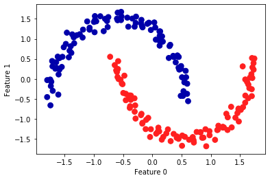
Comparing and evaluating clustering algorithms
Evaluating clustering with ground truth
from sklearn.metrics.cluster import adjusted_rand_score
X, y = make_moons(n_samples=200, noise=0.05, random_state=0)
# Rescale the data to zero mean and unit variance
scaler = StandardScaler()
scaler.fit(X)
X_scaled = scaler.transform(X)
fig, axes = plt.subplots(1, 4, figsize=(15, 3),
subplot_kw={'xticks': (), 'yticks': ()})
# make a list of algorithms to use
algorithms = [KMeans(n_clusters=2), AgglomerativeClustering(n_clusters=2),
DBSCAN()]
# create a random cluster assignment for reference
random_state = np.random.RandomState(seed=0)
random_clusters = random_state.randint(low=0, high=2, size=len(X))
# plot random assignment
axes[0].scatter(X_scaled[:, 0], X_scaled[:, 1], c=random_clusters,
cmap=mglearn.cm3, s=60)
axes[0].set_title("Random assignment - ARI: {:.2f}".format(
adjusted_rand_score(y, random_clusters)))
for ax, algorithm in zip(axes[1:], algorithms):
# plot the cluster assignments and cluster centers
clusters = algorithm.fit_predict(X_scaled)
ax.scatter(X_scaled[:, 0], X_scaled[:, 1], c=clusters,
cmap=mglearn.cm3, s=60)
ax.set_title("{} - ARI: {:.2f}".format(algorithm.__class__.__name__,
adjusted_rand_score(y, clusters)))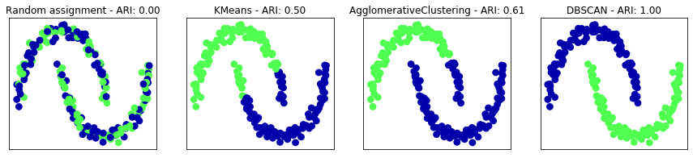
from sklearn.metrics import accuracy_score
# these two labelings of points correspond to the same clustering
clusters1 = [0, 0, 1, 1, 0]
clusters2 = [1, 1, 0, 0, 1]
# accuracy is zero, as none of the labels are the same
print("Accuracy: {:.2f}".format(accuracy_score(clusters1, clusters2)))
# adjusted rand score is 1, as the clustering is exactly the same:
print("ARI: {:.2f}".format(adjusted_rand_score(clusters1, clusters2)))Accuracy: 0.00
ARI: 1.00Evaluating clustering without ground truth
from sklearn.metrics.cluster import silhouette_score
X, y = make_moons(n_samples=200, noise=0.05, random_state=0)
# rescale the data to zero mean and unit variance
scaler = StandardScaler()
scaler.fit(X)
X_scaled = scaler.transform(X)
fig, axes = plt.subplots(1, 4, figsize=(15, 3),
subplot_kw={'xticks': (), 'yticks': ()})
# create a random cluster assignment for reference
random_state = np.random.RandomState(seed=0)
random_clusters = random_state.randint(low=0, high=2, size=len(X))
# plot random assignment
axes[0].scatter(X_scaled[:, 0], X_scaled[:, 1], c=random_clusters,
cmap=mglearn.cm3, s=60)
axes[0].set_title("Random assignment: {:.2f}".format(
silhouette_score(X_scaled, random_clusters)))
algorithms = [KMeans(n_clusters=2), AgglomerativeClustering(n_clusters=2),
DBSCAN()]
for ax, algorithm in zip(axes[1:], algorithms):
clusters = algorithm.fit_predict(X_scaled)
# plot the cluster assignments and cluster centers
ax.scatter(X_scaled[:, 0], X_scaled[:, 1], c=clusters, cmap=mglearn.cm3,
s=60)
ax.set_title("{} : {:.2f}".format(algorithm.__class__.__name__,
silhouette_score(X_scaled, clusters)))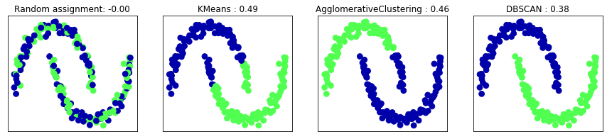
Comparing algorithms on the faces dataset
# extract eigenfaces from lfw data and transform data
from sklearn.decomposition import PCA
pca = PCA(n_components=100, whiten=True, random_state=0)
X_pca = pca.fit_transform(X_people)Analyzing the faces dataset with DBSCAN
# apply DBSCAN with default parameters
dbscan = DBSCAN()
labels = dbscan.fit_predict(X_pca)
print("Unique labels: {}".format(np.unique(labels)))Unique labels: [-1]dbscan = DBSCAN(min_samples=3)
labels = dbscan.fit_predict(X_pca)
print("Unique labels: {}".format(np.unique(labels)))Unique labels: [-1]dbscan = DBSCAN(min_samples=3, eps=15)
labels = dbscan.fit_predict(X_pca)
print("Unique labels: {}".format(np.unique(labels)))Unique labels: [-1 0]# count number of points in all clusters and noise.
# bincount doesn't allow negative numbers, so we need to add 1.
# the first number in the result corresponds to noise points
print("Number of points per cluster: {}".format(np.bincount(labels + 1)))Number of points per cluster: [ 32 2031]noise = X_people[labels==-1]
fig, axes = plt.subplots(3, 9, subplot_kw={'xticks': (), 'yticks': ()},
figsize=(12, 4))
for image, ax in zip(noise, axes.ravel()):
ax.imshow(image.reshape(image_shape), vmin=0, vmax=1)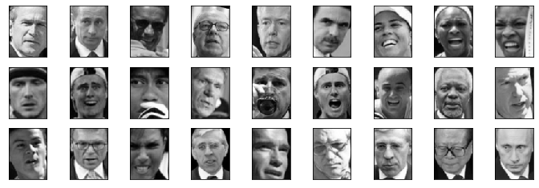
for eps in [1, 3, 5, 7, 9, 11, 13]:
print("\neps={}".format(eps))
dbscan = DBSCAN(eps=eps, min_samples=3)
labels = dbscan.fit_predict(X_pca)
print("Number of clusters: {}".format(len(np.unique(labels))))
print("Cluster sizes: {}".format(np.bincount(labels + 1)))
eps=1
Number of clusters: 1
Cluster sizes: [2063]
eps=3
Number of clusters: 1
Cluster sizes: [2063]
eps=5
Number of clusters: 1
Cluster sizes: [2063]
eps=7
Number of clusters: 14
Cluster sizes: [2004 3 14 7 4 3 3 4 4 3 3 5 3 3]
eps=9
Number of clusters: 4
Cluster sizes: [1307 750 3 3]
eps=11
Number of clusters: 2
Cluster sizes: [ 413 1650]
eps=13
Number of clusters: 2
Cluster sizes: [ 120 1943]dbscan = DBSCAN(min_samples=3, eps=7)
labels = dbscan.fit_predict(X_pca)
for cluster in range(max(labels) + 1):
mask = labels == cluster
n_images = np.sum(mask)
fig, axes = plt.subplots(1, n_images, figsize=(n_images * 1.5, 4),
subplot_kw={'xticks': (), 'yticks': ()})
for image, label, ax in zip(X_people[mask], y_people[mask], axes):
ax.imshow(image.reshape(image_shape), vmin=0, vmax=1)
ax.set_title(people.target_names[label].split()[-1])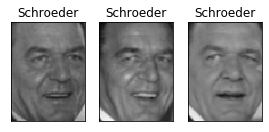
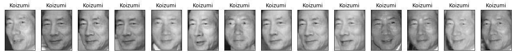
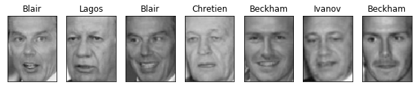
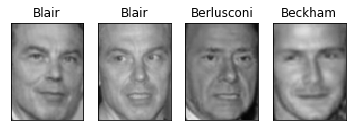

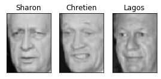
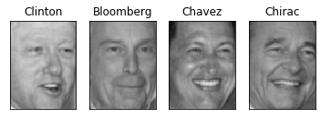
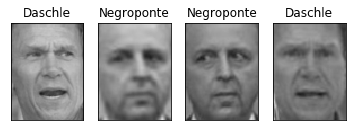


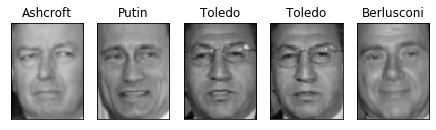
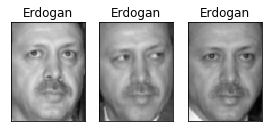
Analyzing the faces dataset with k-Means
# extract clusters with k-Means
km = KMeans(n_clusters=10, random_state=0)
labels_km = km.fit_predict(X_pca)
print("Cluster sizes k-means: {}".format(np.bincount(labels_km)))Cluster sizes k-means: [282 226 105 268 151 324 202 208 208 89]fig, axes = plt.subplots(2, 5, subplot_kw={'xticks': (), 'yticks': ()},
figsize=(12, 4))
for center, ax in zip(km.cluster_centers_, axes.ravel()):
ax.imshow(pca.inverse_transform(center).reshape(image_shape),
vmin=0, vmax=1)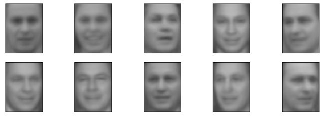
mglearn.plots.plot_kmeans_faces(km, pca, X_pca, X_people,
y_people, people.target_names)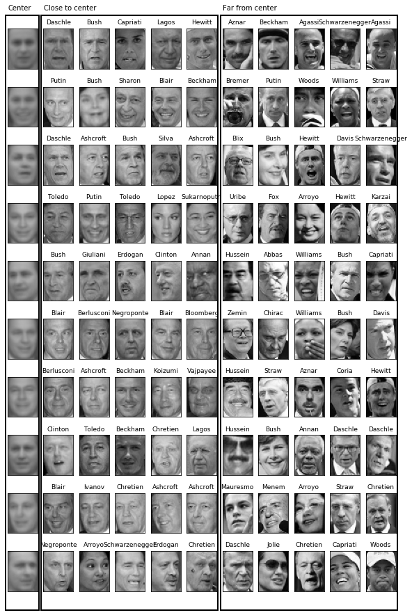
Analyzing the faces dataset with agglomerative clustering
# extract clusters with ward agglomerative clustering
agglomerative = AgglomerativeClustering(n_clusters=10)
labels_agg = agglomerative.fit_predict(X_pca)
print("cluster sizes agglomerative clustering: {}".format(
np.bincount(labels_agg)))cluster sizes agglomerative clustering: [169 660 144 329 217 85 18 261 31 149]print("ARI: {:.2f}".format(adjusted_rand_score(labels_agg, labels_km)))ARI: 0.10linkage_array = ward(X_pca)
# now we plot the dendrogram for the linkage_array
# containing the distances between clusters
plt.figure(figsize=(20, 5))
dendrogram(linkage_array, p=7, truncate_mode='level', no_labels=True)
plt.xlabel("Sample index")
plt.ylabel("Cluster distance")Text(0, 0.5, 'Cluster distance')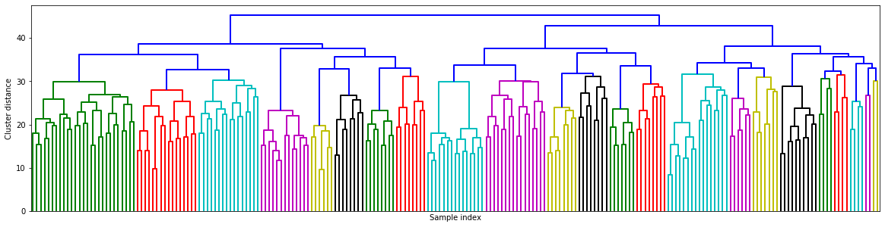
n_clusters = 10
for cluster in range(n_clusters):
mask = labels_agg == cluster
fig, axes = plt.subplots(1, 10, subplot_kw={'xticks': (), 'yticks': ()},
figsize=(15, 8))
axes[0].set_ylabel(np.sum(mask))
for image, label, asdf, ax in zip(X_people[mask], y_people[mask],
labels_agg[mask], axes):
ax.imshow(image.reshape(image_shape), vmin=0, vmax=1)
ax.set_title(people.target_names[label].split()[-1],
fontdict={'fontsize': 9})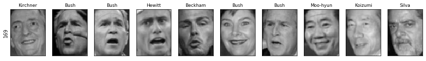
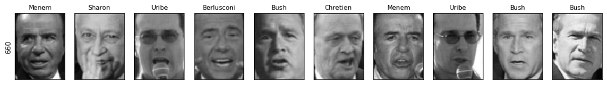
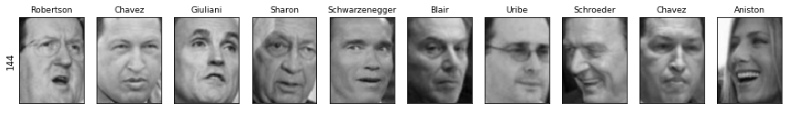
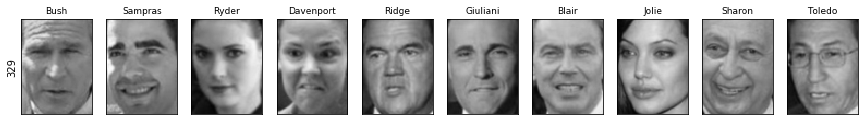
# extract clusters with ward agglomerative clustering
agglomerative = AgglomerativeClustering(n_clusters=40)
labels_agg = agglomerative.fit_predict(X_pca)
print("cluster sizes agglomerative clustering: {}".format(np.bincount(labels_agg)))
n_clusters = 40
for cluster in [10, 13, 19, 22, 36]: # hand-picked "interesting" clusters
mask = labels_agg == cluster
fig, axes = plt.subplots(1, 15, subplot_kw={'xticks': (), 'yticks': ()},
figsize=(15, 8))
cluster_size = np.sum(mask)
axes[0].set_ylabel("#{}: {}".format(cluster, cluster_size))
for image, label, asdf, ax in zip(X_people[mask], y_people[mask],
labels_agg[mask], axes):
ax.imshow(image.reshape(image_shape), vmin=0, vmax=1)
ax.set_title(people.target_names[label].split()[-1],
fontdict={'fontsize': 9})
for i in range(cluster_size, 15):
axes[i].set_visible(False)cluster sizes agglomerative clustering: [ 43 120 100 194 56 58 127 22 6 37 65 49 84 18 168 44 47 31
78 30 166 20 57 14 11 29 23 5 8 84 67 30 57 16 22 12
29 2 26 8]Summary of Clustering Methods
Summary and Outlook
from sklearn.linear_model import LogisticRegression
logreg = LogisticRegression()